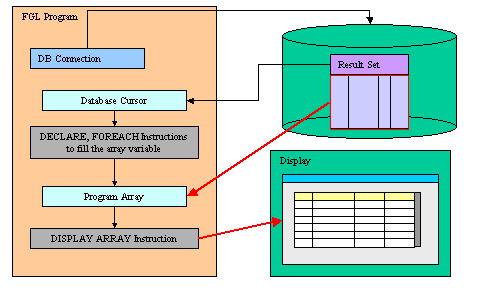
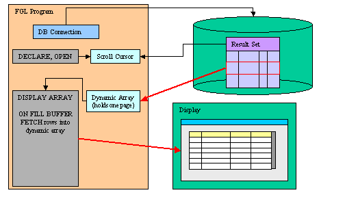

Summary:
See also: Arrays, Records, Result Sets, Programs, Windows, Forms, Input Array
With DISPLAY ARRAY, you can let the user browse a list of records, using a static or dynamic array as the data buffer. The DISPLAY ARRAY instruction can work in full list mode or in paged mode. In full list mode, you must copy all the data you want to display into the array. In paged mode, you provide data rows dynamically during the dialog, using a dynamic array to hold one page of data. The full list mode should be used for a short and static list of rows, while the paged mode can be used for an infinite number of rows. Additionally, the paged mode allows you to fetch fresh data from the database.
In full list mode, the DISPLAY ARRAY instruction uses a static or dynamic program array defined with a record structure corresponding to (or to a part of ) a screen-array of a form. The program array is filled with data rows before DISPLAY ARRAY is executed. In this case, the list is static and cannot be updated until the instruction is exited.

In paged mode, the DISPLAY ARRAY instruction uses a dynamic program array defined with a record structure corresponding to (or to a part of ) a screen-array of a form. The total number of rows is defined by the COUNT attribute, which can be -1 to specify an infinite or undefined number of rows when the dialog starts. The program array is filled dynamically with data rows as needed during the DISPLAY ARRAY execution. The ON FILL BUFFER clause is required, to feed the DISPLAY ARRAY instruction with pages of data. The statements in the ON FILL BUFFER clause are executed automatically by the runtime system each time a new page of data is needed.

The DISPLAY ARRAY dialog implements built-in row sorting which can be used if the dialog is combined with a TABLE or a TREE container; when the end user clicks on a column header of the table, the rows are automatically sorted in ascending or descending order.
For more details about the built-in sort feature, see the Multiple Dialogs page.
DISPLAY ARRAY can support multiple row selection with the ui.Dialog.setSelectionMode() method. By default, the DISPLAY ARRAY instruction highlights only the current row. When multi-row selection is enabled, the end user can select one or several rows with the standard keyboard and mouse click combinations. The program can then query the DIALOG class for selected rows.
DISPLAY ARRAY can be used to implement the controller for a tree-view list widget. The tree node structure is defined by the program array rows, and the form must define a TREE container.
See the Tree Views page for more details.
DISPLAY ARRAY supports new control blocks to implement drag & drop operations.
See the Drag and Drop page for more details.
The DISPLAY ARRAY instruction controls the display of a program array on the screen.
DISPLAY ARRAY array TO
screen-array.*
[ HELP help-number ]
[ ATTRIBUTES ( {
display-attribute |
control-attribute } [,...] ) ]
[ dialog-control-block
[...]
END DISPLAY ]where dialog-control-block is one of :
{ BEFORE DISPLAY
| AFTER DISPLAY
| BEFORE ROW
| AFTER ROW
| ON IDLE idle-seconds
| ON ACTION action-name
| ON FILL BUFFER
| ON EXPAND ( row-index )
| ON COLLAPSE ( row-index )
| ON DRAG_START ( dnd-object )
| ON DRAG_FINISH ( dnd-object )
| ON DRAG_ENTER ( dnd-object )
| ON DRAG_OVER ( dnd-object )
| ON DROP ( dnd-object )
| ON KEY ( key-name [,...] )
}
dialog-statement
[...]
where dialog-statement is one of :
{ statement
| EXIT DISPLAY
| CONTINUE DISPLAY
| ACCEPT DISPLAY
}
The following table shows the display-attributes supported by the DISPLAY ARRAY statement. The display-attributes affect console-based applications only, they do not affect GUI-based applications.
| Attribute | Description |
| BLACK, BLUE, CYAN, GREEN, MAGENTA, RED, WHITE, YELLOW | The TTY color of the displayed data. |
| BOLD, DIM, NORMAL | The TTY font attribute of the displayed data. |
| REVERSE, BLINK, UNDERLINE | The TTY video attribute of the displayed data. |
The following table shows the control-attributes supported by the DISPLAY ARRAY statement:
| Attribute | Description |
| COUNT = row-count | Defines the number of data rows when using a static array or the total number of rows when using the paged mode (can be -1 for infinite). row-count can be an integer literal or a program variable. This is the equivalent of the SET_COUNT() built-in function. |
| HELP = int-expr | Defines the help number when help is invoked by the user. |
| KEEP CURRENT ROW [=bool] | Keeps current row highlighted after execution of the instruction. Note: This attribute is not available in DIALOG instruction. |
| UNBUFFERED [ =bool] | Indicates that the dialog must be sensitive to program variable changes. The bool parameter can be an integer literal or a program variable. |
| CANCEL = bool | Indicates if the default cancel action should be added to the dialog. If not specified, the action is registered. |
| ACCEPT = bool | Indicates if the default accept action should be added to the dialog. If not specified, the action is registered. |
The following steps describe how to use the DISPLAY ARRAY statement:
fgl_dialog_getBufferStart() to
fgl_dialog_getBufferLength().The DISPLAY ARRAY statement binds the members of the array of record to the screen array fields specified with the TO keyword. Array members and screen array fields are bound by position (i.e. not by name). The number of variables in each record of the program array must be the same as the number of fields in each screen record (that is, in a single row of the screen array).
Warning: Keep in mind that array members are bound to screen array fields by position, so you must make sure that the members of the array are defined in the same order as the screen array fields.
When using the UNBUFFERED attribute, the instruction is sensitive to program variable changes. This means that you do not have to DISPLAY the values; setting the program variable used by the dialog automatically displays the data into the corresponding form field.
01...02ON ACTION change03LET arr[arr_curr()].field1 = newValue()04...
If the program array has the same structure as a database table (this is the case when the array is defined with a LIKE clause), you may not want to display/use some of the columns. You can achieve this by used PHANTOM fields in the screen array definition. Phantom fields will only be used to bind program variables, and will not be transmitted to the front-end for display.
The ATTRIBUTES clause specifications override all default attributes and temporarily override any display attributes that the OPTIONS or the OPEN WINDOW statement specified for these fields. While the DISPLAY ARRAY statement is executing, the runtime system ignores the INVISIBLE attribute.
The HELP clause specifies the number of a help message to display if the user invokes the help while executing the instruction. The predefined help action is automatically created by the runtime system. You can bind action views to the 'help' action.
When using a dynamic array, the number of rows to be displayed is defined by the number of elements in the dynamic array; the COUNT attribute is ignored.
When using a static array or the paged mode, the number of rows to be displayed is defined by the COUNT attribute. You can also use the SET_COUNT() built-in function, but it is supported for backward compatibility only. If you don't know the total number of rows for the paged mode, you can specify -1 for the COUNT attribute (or in the SET_COUNT() call before the dialog block): With COUNT=-1, the dialog will ask for rows by executing ON FILL BUFFER until you provide less rows as asked, or if you reset the number of rows to a value higher as -1 with ui.Dialog.setArrayLength().
Depending on the list container used in the form, the current row may be highlighted during the execution of the dialog, and cleared when the instruction ends. You can change this default behavior by using the KEEP CURRENT ROW attribute, to force the runtime system to keep the current row highlighted.
The ACCEPT attribute can be set to FALSE to avoid the automatic creation of the accept default action. Use this attribute when you want to write a specific validation procedure by using ACCEPT DISPLAY.
The CANCEL attribute can be set to FALSE to avoid the automatic creation of the cancel default action. Use this attribute when you only need a validation action (accept), or when you want to write a specific cancellation procedure by using EXIT DISPLAY.
Note that if the CANCEL=FALSE option is set, no close action will be created, and you must write an ON ACTION close control block to create an explicit action.
When an DISPLAY ARRAY instruction executes, the runtime system creates a set of default actions. See the control block execution order to understand what control blocks are executed when a specific action is fired.
The following table lists the default actions created for this dialog:
| Default action | Description |
| accept | Validates the DISPLAY ARRAY dialog (validates current row
selection) Creation can be avoided with ACCEPT attribute. |
| cancel | Cancels the DISPLAY ARRAY dialog (no validation, INT_FLAG is set) Creation can be avoided with CANCEL attribute. |
| close | By default, cancels the DISPLAY ARRAY dialog (no validation,
INT_FLAG is set) Default action view is hidden. See Windows closed by the user. |
| help | Shows the help topic defined by the HELP clause. Only created when a HELP clause is defined. |
| nextrow | Moves to the next row in a list displayed in one row of fields. Only created if DISPLAY ARRAY used with a screen record having only one row. |
| prevrow | Moves to the previous row in a list displayed in one row of fields. Only created if DISPLAY ARRAY used with a screen record having only one row. |
| firstrow | Moves to the first row in a list displayed in one row of fields. Only created if DISPLAY ARRAY used with a screen record having only one row. |
| lastrow | Moves to the last row in a list displayed in one row of fields. Only created if DISPLAY ARRAY used with a screen record having only one row. |
The accept and cancel default actions can be avoided with the ACCEPT and CANCEL dialog control attributes:
01DISPLAY ARRAY arr TO sr.* ATTRIBUTES( CANCEL=FALSE, ... )02...
Data blocks are dialog triggers which are fired when the dialog controller needs data to feed the view with values. Such blocks are typically used when record list data is provided dynamically, with the paged mode of when implementing dynamic tree-views.
The ON FILL BUFFER block is used to fill a page of rows into the dynamic array, according to an offset and a number of rows. The offset can be retrieved with the FGL_DIALOG_GETBUFFERSTART() built-in function and the number of rows to provide is defined by the FGL_DIALOG_GETBUFFERLENGTH() built-in function.
A typical paged display array consists of a scroll cursor providing the list of records to be displayed. Scroll cursors use a static result set. If you want to display fresh data, you can write advanced paged display array instructions by using a scroll cursor providing the primary keys of the reference result set, plus a prepared cursor used to fetch rows on demand in the ON FILL BUFFER clause. In this case, you may need to check if a row still exists when fetching a record with the second cursor.
Before starting a paged display array, you do normally count the total number of rows in the result set (SELECT COUNT(*)) and give this number to the dialog with the COUNT option or SET_COUNT() function. You can start the dialog with an undefined number of rows by specifying -1. The dialog will continue to ask for rows with ON FILL BUFFER until you provide less rows as expected for the page, or if you reset the total number of rows to a value different from -1 with ui.Dialog.setArrayLength().
See Example 2 for a typical paged mode implementation.
This block is executed when a treeview node is expanded (i.e. opened). Typically used to implement dynamic trees, where nodes are added according to the nodes opened by the end user. See TreeViews for more details.
This block is executed when a treeview node is collapsed (i.e. closed). Typically used to implement dynamic trees, where nodes are added according to the nodes opened by the end user. See TreeViews for more details.
The BEFORE DISPLAY block is executed one time, before the runtime system gives control to the user. You can implement dialog initialization tasks in this block.
The AFTER DISPLAY block is executed one time, after the user has validated or canceled the dialog and before the runtime system executes the instruction that appears just after the DISPLAY ARRAY block. You typically implement dialog finalization in this block.
The BEFORE ROW block is executed each time the user moves to another row, after the destination row is made the current one.
When the dialog starts, BEFORE ROW will be executed for the current row, but only if there are data rows in the array.
When called in this block, the ARR_CURR() function returns the index of the current row.
The AFTER ROW block is executed each time the user moves to another row, before the current row is left. When called in this block, the ARR_CURR() function returns the index of the current row.
The following table shows the order in which the runtime system executes the control blocks in the DISPLAY ARRAY instruction, according to the user action:
| Context / User action | Control Block execution order |
| Entering the dialog |
|
| Moving to a different row |
|
| Validating the dialog |
|
| Canceling the dialog |
|
The ON IDLE idle-seconds clause defines a set of instructions that must be executed after idle-seconds of inactivity. This can be used, for example, to quit the dialog after the user has not interacted with the program for a specified period of time. The parameter idle-seconds must be an integer literal or variable. If it evaluates to zero, the timeout is disabled.
You should not use the ON IDLE trigger with a short timeout period such as 1 or 2 seconds; The purpose of this trigger is to give the control back to the program after a relatively long period of inactivity (10, 30 or 60 seconds). This is typically the case when the end user leaves the workstation, or got a phone call. The program can then execute some code before the user gets the control back.
01...02ON IDLE 3003IF ask_question("Do you want to leave the dialog?") THEN04EXIT DISPLAY05END IF06...
You can use ON ACTION blocks to execute a sequence of instructions when the user raises a specific action. This is the preferred solution compared to ON KEY blocks, because ON ACTION blocks use abstract names to control user interaction.
01...02ON ACTION zoom03CALL zoom_customers() RETURNING st, cust_id, cust_name04...
For more details about ON ACTION and binding action views, see Interaction Model.
For backward compatibility, you can use ON KEY blocks to execute a sequence of instructions when the user presses a specific key. The following key names are accepted by the compiler:
| Key Name | Description |
| ACCEPT | The validation key. |
| INTERRUPT | The interruption key. |
| ESC or ESCAPE | The ESC key (not recommended, use ACCEPT instead). |
| TAB | The TAB key (not recommended). |
| Control-char | A control key where char can be any character except A, D, H, I, J, K, L, M, R, or X. |
| F1 through F255 | A function key. |
| DELETE | The key used to delete a new row in an array. |
| INSERT | The key used to insert a new row in an array. |
| HELP | The help key. |
| LEFT | The left arrow key. |
| RIGHT | The right arrow key. |
| DOWN | The down arrow key. |
| UP | The up arrow key. |
| PREVIOUS or PREVPAGE | The previous page key. |
| NEXT or NEXTPAGE | The next page key. |
An ON KEY block defines one to four different action objects that will be identified by the key name in lowercase (ON KEY(F5,F6) = creates Action f5 + Action f6). Each action object will get an acceleratorName assigned. In GUI mode, Action Defaults are applied for ON KEY actions by using the name of the key. You can define secondary accelerator keys, as well as default decoration attributes like button text and image, by using the key name as action identifier. Note that the action name is always in lowercase letters. See Action Defaults for more details.
Warning: Check carefully the ON KEY CONTROL-? statements because they may result in having duplicate accelerators for multiple actions due to the accelerators defined by Action Defaults. Additionally, ON KEY statements used with ESC, TAB, UP, DOWN, LEFT, RIGHT, HELP, NEXT, PREVIOUS, INSERT, CONTROL-M, CONTROL-X, CONTROL-V, CONTROL-C and CONTROL-A should be avoided for use in GUI programs, because it's very likely to clash with default accelerators defined in the Action Defaults.
By default, ON KEY actions are not decorated with a default button in the action frame (i.e. default action view). You can show the default button by configuring a text attribute with the Action Defaults.
These interaction blocks are used to implement Drag & Drop in a DISPLAY ARRAY controlling a table or treeview.
For more details, see Drag and Drop description in this page.
CONTINUE DISPLAY skips all subsequent statements in the current control block and gives the control back to the dialog. This instruction is useful when program control is nested within multiple conditional statements, and you want to return the control to the dialog. Note that if this instruction is called in a control block that is not AFTER DISPLAY, further control blocks might be executed according to the context. Actually, CONTINUE DISPLAY just instructs the dialog to continue as if the code in the control block was terminated (i.e. it's a kind of GOTO end_of_control_block). However, when executed in AFTER DISPLAY, the focus returns to the current row in the list, giving the user another chance to browse and select a row. In this case the BEFORE ROW of the current row will be fired.
You can use the EXIT DISPLAY to terminate the DISPLAY ARRAY instruction and resume the program execution at the instruction immediately following the DISPLAY ARRAY block.
The ACCEPT DISPLAY instruction validates the DISPLAY ARRAY instruction and exits the DISPLAY ARRAY instruction. The AFTER DISPLAY control block will be executed. Statements after ACCEPT DISPLAY will not be executed.
Inside the dialog instruction, the predefined keyword DIALOG represents the current dialog object. It can be used to execute methods provided in the DIALOG built-in class.
For example, you can enable or disable an action with the ui.Dialog.setActionActive() dialog method, or you can hide and show a default action view with ui.Dialog.setActionHidden():
01...02BEFORE DISPLAY03CALL DIALOG.setActionActive("refresh",FALSE)
The language provides several built-in functions and operators to use in a DISPLAY ARRAY statement. You can use the following built-in functions to keep track of the relative states of the current row, the program array, and the screen array or to access the field buffers and keystroke buffers. These functions and operators are:
The SCROLL instruction specifies vertical movements of displayed values in all or some of the fields of a screen array within the current form.
SCROLL field-list { UP | DOWN } [ BY lines
]
where field-list is :
{ field-name
| table-name.*
| table-name.field-name
| screen-array[line].*
| screen-array[line].field-name
|
screen-record.*
|
screen-record.field-name
}
[,...]
Form definition file "custlist.per":
01DATABASE stores0203LAYOUT04TABLE05{06Id Name LastName07[f001 |f002 |f003 ]08[f001 |f002 |f003 ]09[f001 |f002 |f003 ]10[f001 |f002 |f003 ]11[f001 |f002 |f003 ]12[f001 |f002 |f003 ]13}14END15END1617TABLES18customer19END2021ATTRIBUTES22f001 = customer.customer_num;23f002 = customer.fname;24f003 = customer.lname;25END2627INSTRUCTIONS28DELIMITERS "||";29SCREEN RECORD srec[6] (30customer.customer_num,31customer.fname,32customer.lname);33END
Application:
01MAIN02DEFINE cnt INTEGER03DEFINE arr ARRAY[500] OF RECORD04id INTEGER,05fname CHAR(30),06lname CHAR(30)07END RECORD0809DATABASE stores71011OPEN FORM f1 FROM "custlist"12DISPLAY FORM f11314DECLARE c1 CURSOR FOR15SELECT customer_num, fname, lname FROM customer16LET cnt = 117FOREACH c1 INTO arr[cnt].*18LET cnt = cnt + 119END FOREACH20LET cnt = cnt - 121DISPLAY ARRAY arr TO srec.* ATTRIBUTES(COUNT=cnt)22ON ACTION print23DISPLAY "Print a report"24END DISPLAY25END MAIN
Form definition file "custlist.per" (same as example 1)
Application:
01MAIN02DEFINE arr DYNAMIC ARRAY OF RECORD03id INTEGER,04fname CHAR(30),05lname CHAR(30)06END RECORD07DEFINE cnt, ofs, len, row, i INTEGER0809DATABASE stores71011OPEN FORM f1 FROM "custlist"12DISPLAY FORM f11314DECLARE c1 SCROLL CURSOR FOR15SELECT customer_num, fname, lname FROM customer16OPEN c117DISPLAY ARRAY arr TO srec.* ATTRIBUTES(COUNT=-1)18ON FILL BUFFER19LET ofs = fgl_dialog_getBufferStart()20LET len = fgl_dialog_getBufferLength()21LET row = ofs22FOR i=1 TO len23FETCH ABSOLUTE row c1 INTO arr[i].*24IF SQLCA.SQLCODE!=0 THEN25CALL DIALOG.setArrayLength("srec",row-1)26EXIT FOR27END IF28LET row = row + 129END FOR30AFTER DISPLAY31IF NOT int_flag THEN32DISPLAY "Selected customer is #"33|| arr[arr_curr()-ofs+1].id34END IF35END DISPLAY36END MAIN